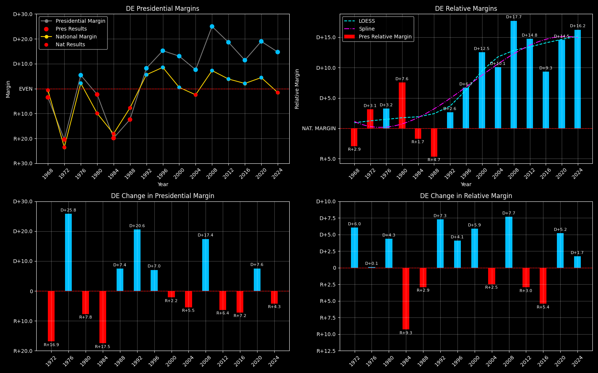

← Back to Map

Delaware (DE) statewide
Delaware (DE) — Data
| Year | EVs | D | R | Margin | Rel. Margin | Nat. Margin | Margin Δ | Rel. Margin Δ | Nat. Margin Δ | Other votes | Total votes |
|---|
| 1968 | 3 | 89,194(41.6%) | 96,714(45.1%) | R+4.0 | R+3.4 | R+0.7 | | | | 28,459(13.3%) | 214,367 |
| 1972 | 3 | 92,283(39.2%) | 140,357(59.6%) | R+20.7 | D+2.9 | R+23.6 | R+16.6 | D+6.3 | R+22.9 | 2,876(1.2%) | 235,516 |
| 1976 | 3 | 122,596(52.1%) | 109,831(46.6%) | D+5.5 | D+3.3 | D+2.2 | D+26.2 | D+0.4 | D+25.8 | 3,082(1.3%) | 235,509 |
| 1980 | 3 | 105,754(44.9%) | 111,252(47.2%) | R+2.5 | D+8.1 | R+10.6 | R+8.0 | D+4.8 | R+12.8 | 18,662(7.9%) | 235,668 |
| 1984 | 3 | 101,656(39.9%) | 152,190(59.8%) | R+19.9 | R+1.8 | R+18.1 | R+17.4 | R+9.9 | R+7.5 | 726(0.3%) | 254,572 |
| 1988 | 3 | 108,647(43.5%) | 139,639(55.9%) | R+12.5 | R+4.7 | R+7.8 | D+7.4 | R+2.9 | D+10.4 | 1,605(0.6%) | 249,891 |
| 1992 | 3 | 126,054(43.5%) | 102,313(35.3%) | D+10.4 | D+3.5 | D+6.9 | D+22.9 | D+8.2 | D+14.7 | 61,368(21.2%) | 289,735 |
| 1996 | 3 | 140,355(51.8%) | 99,062(36.5%) | D+17.2 | D+7.8 | D+9.5 | D+6.9 | D+4.3 | D+2.6 | 31,667(11.7%) | 271,084 |
| 2000 | 3 | 180,068(55.0%) | 137,288(41.9%) | D+13.5 | D+12.9 | D+0.5 | R+3.8 | D+5.2 | R+8.9 | 10,266(3.1%) | 327,622 |
| 2004 | 3 | 200,152(53.3%) | 171,660(45.7%) | D+7.7 | D+10.1 | R+2.5 | R+5.8 | R+2.8 | R+3.0 | 3,458(0.9%) | 375,270 |
| 2008 | 3 | 255,459(61.9%) | 152,374(36.9%) | D+25.3 | D+17.9 | D+7.4 | D+17.6 | D+7.8 | D+9.8 | 4,783(1.2%) | 412,616 |
| 2012 | 3 | 242,584(58.6%) | 165,484(40.0%) | D+18.9 | D+15.0 | D+3.9 | R+6.4 | R+3.0 | R+3.4 | 5,853(1.4%) | 413,921 |
| 2016 | 3 | 235,603(53.4%) | 185,127(41.9%) | D+12.0 | D+9.8 | D+2.2 | R+6.9 | R+5.2 | R+1.7 | 20,860(4.7%) | 441,590 |
| 2020 | 3 | 296,268(58.8%) | 200,603(39.8%) | D+19.3 | D+14.7 | D+4.5 | D+7.3 | D+5.0 | D+2.3 | 7,139(1.4%) | 504,010 |
| 2024 | 3 | 289,758(56.5%) | 214,351(41.8%) | D+15.0 | D+16.5 | R+1.6 | R+4.3 | D+1.8 | R+6.1 | 8,803(1.7%) | 512,912 |
Column explanations
- Year
- Election year.
- EVs
- Number of electoral votes allocated to this state or unit.
- D
- Number of votes for the Democratic candidate (raw count).
- R
- Number of votes for the Republican candidate (raw count).
- Margin
- Margin between the two major-party candidates ((D - R)/(D + R)).
- Rel. Margin
- The presidential margin relative to the national presidential margin (Margin - Nat. Margin).
- Nat. Margin
- The national presidential margin for that year ((D_total - R_total)/(D_total + R_total)).
- Δ
- Change (delta) in the value from the previous election year. Blank if no data for previous year.
- Other votes
- Number of votes for third-party (other) candidates (raw count).
- Total votes
- Total voter turnout or ballots cast (when provided).